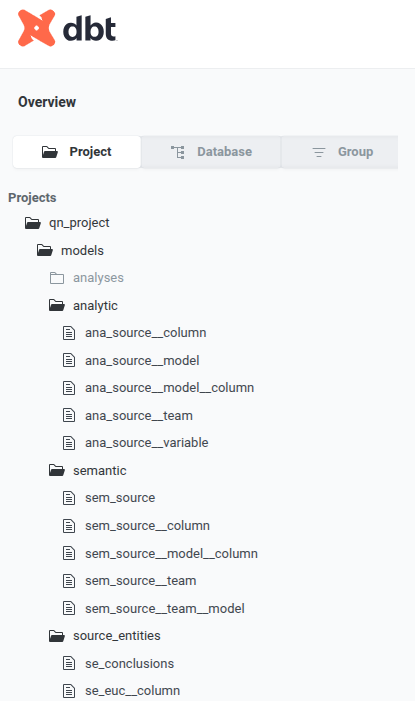
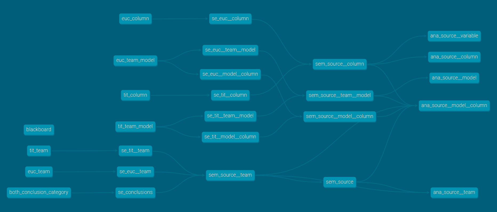

Why and how
I use a modern data stack for small and enterprise-scale projects alike
2026-08-06
150 expert teams, same data, same questions
Domain question
\(\Delta\)
Analytic Question?
Domain question
To what extent is the growth of nestling blue tits (Cyanistes caeruleus) influenced by competition with siblings?
data: n rows x m columns
Domain question
How does grass cover influence Eucalyptus spp. seedling recruitment?
data: n rows x m columns
Decomposing a well-scoped domain question using data with good coverage produces the same analysis
It’s turtles all the way down
using Dagster to manage analytic iteration
Our domain question
Domain quesiton \(\Delta\) analytic question?
On
Many analyses:
… and more
as a conceptual graph of entities
instantiated as a dbt graph


Orchestrators enable conducting instrumentalists playing different instruments to produce a symphony of analytic outputs
Datapunk (jill of all languages, mistress of none)
Ecologist (R)
have domain-specific workflows
The essence of orchestration
Executing a DAG of scripts.
github: softloud/questionability